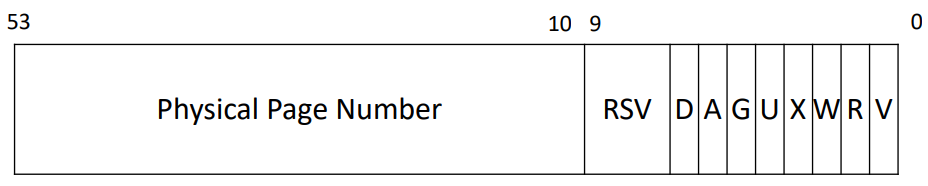

在本 lab 中，我们将进行页表机制的探索。
#Preparation
切换到对应分支
$ git fetch
$ git checkout pgtbl
$ make clean#Task1: Speed up system calls
该任务要求我们在进程虚拟地址空间中添加一个固定项：USYSCALL，该页的开头字段为当前进程 pid，这样一来 getpid() 就不用陷入内核，而是直接通过访问虚拟地址即可获取，从而加快速度。
用户层函数 ugetpid() 已经为我们实现好了，我们只需要关注内核中，更具体来讲，是新建进程时初始化虚拟地址空间动作中发生的事。
进程会在两个时候被创建，一个是 userinit()(kernel/proc.c)时，一个是调用 fork() 时。进程的创建会调用 kernel/proc.c 中的 allocproc()，然后通过 proc_pagetable() 来初始化页表。
我们要做的很简单。
第一步，在页表初始化时加入一个 {USYSCALL => PHYPAGE} 的 PTE。USYSCALL 在 kernel/memlayout.h 中定义（就是 TRAPFRAME 的前一页），而 PHYPAGE 则需要我们调用 kalloc()(kernel/kalloc.c) 进行空闲页分配。
第二步，也就是正确完成页表初始化后，将 pid 写入 PHYPAGE。
#ifdef LAB_PGTBL是灰的不要紧，make时会自动帮我们 define。
PHYPAGE 的分配操作只能在 allocproc() 中进行，因为一旦分配失败，我们需要释放当前进程。为了让同一 PHYPAGE 能被 proc_pagetable() 访问，我在 struct proc 中添加了 usyscall 字段（这些都是参考了 trapframe 的初始化流程）。
kernel/proc.cstatic struct proc* allocproc(void) { ... found: ... // Allocate a trapframe page and a usyscall page. if((p->trapframe = (struct trapframe *)kalloc()) == 0 || (p->usyscall = (struct usyscall *)kalloc()) == 0){ ... } // An empty user page table. p->pagetable = proc_pagetable(p); if(p->pagetable == 0){ ... } p->usyscall->pid = p->pid; ... }
添加 PTE 的操作很简单，页表相关操作都在 kernel/vm.c 中，我们需要关注 mempages() 函数，该函数就是为指定页表添加 PTE。唯一需要关注的就是符号控制位，根据我们的需求，该页面为只读型，而且能被用户层函数访问，那么只赋予 PTE_R|PTE_U 即可。有效位会在 mappages() 内部添加，无需操心。
如果添加失败，需要把已经添加的表项清空，并且释放页表，参考上面的代码即可。
kernel/vm.cpagetable_t proc_pagetable(struct proc *p) { ... // map the trapframe just below TRAPFRAME, for speeding up getpid() if (mappages(pagetable, USYSCALL, PGSIZE, (uint64)p->usyscall, PTE_R | PTE_U) < 0) { uvmunmap(pagetable, TRAMPOLINE, 1, 0); uvmunmap(pagetable, TRAPFRAME, 1, 0); uvmfree(pagetable, 0); return 0; } ... }
当然，不仅要考虑分配，还要考虑释放的操作。如果到这一步就急匆匆地 make qemu; ./pgtbltest，那你马上就会得到一个 panic: freewalk leaf。这是因为我们没有在清空页表时清空我们已分配的 PHYPAGE，而这一步在 freeproc() 函数中实现。
kernel/proc.cstatic void freeproc(struct proc *p) { if(p->trapframe) kfree((void*)p->trapframe); p->trapframe = 0; if (p->usyscall) // (!new) kfree((void*)p->usyscall); // (!new) p->usyscall = 0; // (!new) if(p->pagetable) proc_freepagetable(p->pagetable, p->sz); p->pagetable = 0; p->sz = 0; p->pid = 0; p->parent = 0; p->name[0] = 0; p->chan = 0; p->killed = 0; p->xstate = 0; p->state = UNUSED; }
当然还要关注页表对应页的释放操作，proc_freepagetable()(kernel/proc.c) 的注释讲的很清楚：Free a process’s page table, and free the physical memory it refers to. 并且它也给了提示：要调用 uvmunmap()。所以新增一行即可，实际的释放操作会在 uvmunmap() 中完成：
kernel/proc.cvoid proc_freepagetable(pagetable_t pagetable, uint64 sz) { uvmunmap(pagetable, TRAMPOLINE, 1, 0); uvmunmap(pagetable, TRAPFRAME, 1, 0); uvmunmap(pagetable, USYSCALL, 1, 0); // (!new) uvmfree(pagetable, sz); }
#Task2: Print a page table
现在我们需要按照给定格式，在 kernel/exec.c:119 插入 if(p->pid==1) vmprint(p->pagetable) 来输出初始进程的页表，以可视化并有助于 debug。
参考 kernel/vm.c 中的 freewalk()，我们主要关注的是它以怎样的方式遍历页目录结构——获取表项，得到物理地址，根据标志位判断这一物理地址是页表还是数据页，决定是否需要进一步深入。
在 xv6 中，每个页表项的低位为标志位，如下图所示：

kernel/riscv.h中已经为我们定义好了若干标志位，直接使用即可。
kernel/vm.cvoid freewalk(pagetable_t pagetable) { ... for(int i = 0; i < 512; i++){ pte_t pte = pagetable[i]; if((pte & PTE_V) && (pte & (PTE_R|PTE_W|PTE_X)) == 0){ // this PTE points to a lower-level page table. uint64 child = PTE2PA(pte); freewalk((pagetable_t)child); ... } ... } ... }
不难发现，判断的条件就是 (pte & PTE_V) && (pte & (PTE_R|PTE_W|PTE_X) == 0，PTE_V 位意味着该页表项中的物理地址是已分配的，PTE_R|PTE_W|PTE_X 意味着这一物理地址对应的是页表，而非数据项。
此外，我们还需要根据当前页表的 level 来打印，毕竟 level 越低，前面的 .. 越多，所以还需要一个额外的 vmprintwalk() 函数。
那么先在 kernel/def.h 中添加函数签名，然后修改 kernel/exec.c，最后就是在 kernel/vm.c 下加入两个函数的代码了。
kernel/vm.cvoid vmprint(pagetable_t pagetable) { printf("page table %p\n", pagetable); // 用 %p 来进行十六进制格式化 vmprintwalk(pagetable, 2); } void vmprintwalk(pagetable_t pagetable, int level) { // there are 2^9 = 512 PTEs in a page table. for (int i = 0; i < 512; i++) { pte_t pte = pagetable[i]; if (pte & PTE_V) { uint64 child = PTE2PA(pte); for (int i = 0; i < 2-level; i++) { printf(".. "); } printf("..%d: pte %p pa %p\n", i, pte, child); if (level && (pte & (PTE_R|PTE_W|PTE_X)) == 0) { vmprintwalk((pagetable_t)child, level-1); // 这里需要用类型转换，否则编译报错 } } } }
#Task3: Detecting which pages have been accessed
该任务要求我们利用跟踪哪些页被访问过，并且通过用户层函数 pgaccess() 来获取自从上一次调用以来被访问过的页。
既然如此，那每个页表项就需要一个「访问位」咯，根据上面那张图，我们可以在 kernel/riscv.h 中添加一行 #define PTE_A (1L << 6)，方便进行位运算。
lab 已经贴心地为我们做好了所有准备工作，包括修改 usys.pl、注册系统调用等，所以我们只需要在 kernel/sysproc.c 中实现 sys_pgaccess() 函数即可。
查看 user/user.h 中 pgaccess() 的函数签名我们发现，我们需要接收三个参数，分别是一个虚拟地址 vba，一个整型 npages，和一个指针 vp，用 argaddr() 与 argint() 处理得到参数后，检查一下地址是否越界——pgaccess 的作用是追踪 vba 开始 npages 个页面的被访问情况，那么最大的地址一定不能超过 MAXVA，否则直接返回 -1。
然后根据得到的基地址，逐页查页表，检查指向数据页的那个页表项的 PTE_A 位，如果为 1，则将 vp 指针指向内存的第 i 个 bit 置 1。这就是一个简单的检查某页是否被访问过的流程。
根据
sys_sysinfo()的知识，这里必须用copyout()拷贝数据到vp指向的内存。
那么如何根据页表找到最终的页表项呢？kernel/vm.c 中为我们提供了 walk() 的 API，它根据虚拟地址，返回指向数据页的那个页表项的指针。还有一个叫 walkaddr() 的，是直接返回物理页的起始地址，后面有用，这里暂时用不到。
kernel/sysproc.cint sys_pgaccess(void) { uint64 vba; // virtual base address int npages; uint64 vp; if (argaddr(0, &vba) < 0 || argint(1, &npages) < 0 || argaddr(2, &vp) < 0) { return -1; } // 检查地址是否溢出虚拟内存空间 vba = PGROUNDDOWN(vba); if (vba + npages*PGSIZE > MAXVA) { return -1; } unsigned int abits = 0; struct proc* p = myproc(); pagetable_t pagetable = p->pagetable; for (int i = 0; i < npages; i++) { uint64 va = vba + i*PGSIZE; pte_t* pte = walk(pagetable, va, 0); // 直接用会报 error: implicit declaration of function ‘walk’ // 需要在 kernel/def.h 中添加声明 if (*pte & PTE_A) { abits |= 1 << i; *pte &= ~PTE_A; // 由于是上一次调用以来的访问情况，故每次调用都要解除访问 } } copyout(pagetable, vp, (char*)&abits, sizeof(abits)); return 0; }
现在还有一个问题，PTE_A 位是我们新增的，也就是说 lab 并没有实现在什么地方将其置 1，就需要我们找一个合适的位置去置位，不然 *pte & PTE_A 将毫无意义。
前面提到的 walkaddr() 可以解决该问题。毕竟每次访问物理页的时候必然要经过这个调用，它返回的物理页起始地址，那肯定是要有人去访问的——就算没人访页，那也视为去访问了——所以，u know，在返回前置位即可。毕竟，这是访问物理页的唯一通道。
如果加在
walk()里，那么sys_pgaccess()检查的每一页，都会因为调用了walk()而置PTE_A=1，这肯定是不行的。
kernel/vm.cuint64 walkaddr(pagetable_t pagetable, uint64 va) { pte_t *pte; uint64 pa; if(va >= MAXVA) return 0; pte = walk(pagetable, va, 0); if(pte == 0) return 0; if((*pte & PTE_V) == 0) return 0; if((*pte & PTE_U) == 0) return 0; *pte |= PTE_A; // (!new) pa = PTE2PA(*pte); return pa; }
#测试结果
$ make grade
...
== Test pgtbltest ==
$ make qemu-gdb
(3.4s)
== Test pgtbltest: ugetpid ==
pgtbltest: ugetpid: OK
== Test pgtbltest: pgaccess ==
pgtbltest: pgaccess: OK
== Test pte printout ==
$ make qemu-gdb
pte printout: OK (1.0s)
== Test answers-pgtbl.txt == answers-pgtbl.txt: OK
== Test usertests ==
$ make qemu-gdb
(125.0s)
== Test usertests: all tests ==
usertests: all tests: OK
== Test time ==
time: OK
Score: 46/46#最后的工作
-
git commit -am ""将所有修改提交到本地; -
执行
make handin。由于 lab0 保存了 APIKey，故直接成功提交；
可选的挑战再说吧，没有什么想做的欲望。